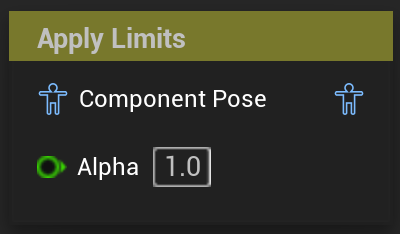

Apply Limits
Limits the rotation of an array of joints
UAnimGraphNode_ApplyLimits
FAnimNode_ApplyLimits

Limits the rotation of an array of joints in local space(relative to their refpose).
The limits are defined in two arrays, the Angular Range Limits and the Angular Offsets.
Angular Range Limits
Each entry in this array holds a reference to the bone that should be constrained, and the angles the rotation of that bone should be constrained within. The entries of this array can be freely added and removed, and the node also works if multiple entries reference the same bone. In that case they will be applied in the order they appear.
Angular Offsets
Each entry offsets the corresponding limits by the specified euler angles. The entries of this array get automatically added and removed based on the contents of the Angular Range Limits. Each Angular Offset corresponds to the range limit of the same index.
Debug Visualization
While the node is selected, the specified limits and angular offsets are visualized in the 3d viewport of the animation blueprint editor.
Each entry gets visualized independently though. This means that if one entry conflicts or overrides with another, the visualization will not display this, and instead just draw the conflicting limits over another. In that case the behaviour is not accurately displayed.